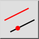
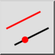
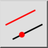
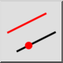

Równoległa (przez punkt)
Pasek narzędziowy / ikona:
 

Menu: Rysowanie > Linia > Równoległa (przez punkt)
Skrót: L, G
Polecenia: lineparallelthrough | lineoffsetthrough | parallelthrough | lg
Jest to tłumaczenie automatyczne.
Pasek narzędziowy / ikona:
 

Menu: Rysowanie > Linia > Równoległa (przez punkt)
Skrót: L, G
Polecenia: lineparallelthrough | lineoffsetthrough | parallelthrough | lg
Za pomocą tego narzędzia można tworzyć podobieństwa do istniejących linii lub koncentrycznych łuków i okręgów. Łuk lub okrąg równoległy lub koncentryczny przechodzi przez dany punkt.